The Problems
Single children aged 12-18 lack the material and spiritual companionship of both parents
Teenagers aged 12-18 who lack care from either parent due to their parents' divorce have an increased likelihood of developing psychological problems.
Due to their parents' divorce, there is often ambiguity about the distribution of financial responsibilities and companionship duties towards their children.
The Solution
Communication between child and parent is key
Building Transparency, Unity, and Engagement
- Transparency: This feature keeps everyone informed about schedules and important events.
- Engagement: The feature engages the child in organizing and understanding their schedule, fostering participation.
- Fostering Unity: Despite divorce, it maintains familial unity through shared planning.
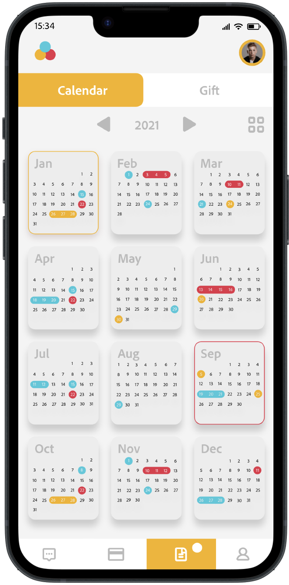
Clarity, Responsibility, and Budgeting
- Financial Clarity: The feature provides transparency into monthly child-related expenses.
- Responsibility Management: It aids in distinguishing financial responsibilities between divorced parents.
- Budget Planning: This tool helps parents and children plan and track budget effectively.
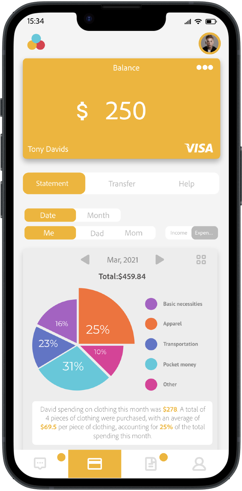
Enabling Flexible, Personalized, and Supportive Communication
- Flexible Communication: Offers option for individual or group chats with family members.
- Personalized Engagement: Allows for tailored conversations with each parent or guardian.
- Emotional Support: Provides a platform for children to feel cared for and heard.
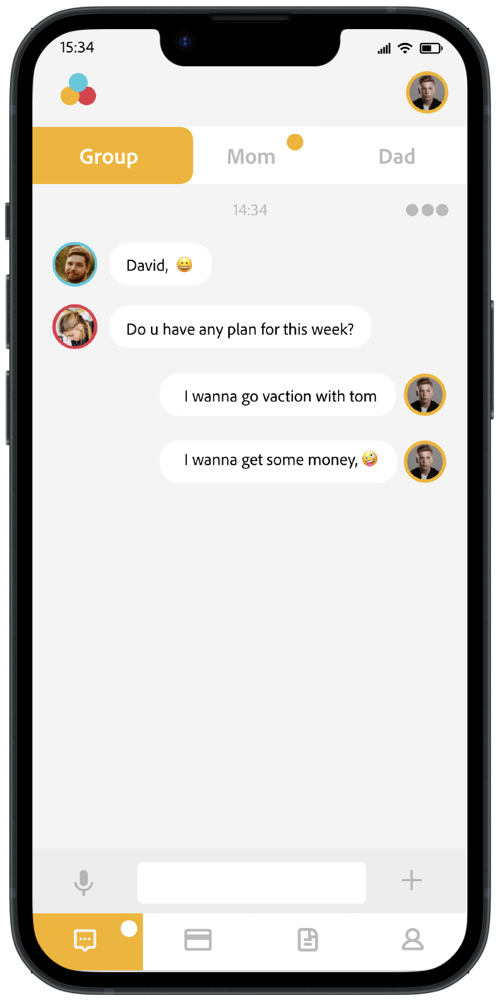
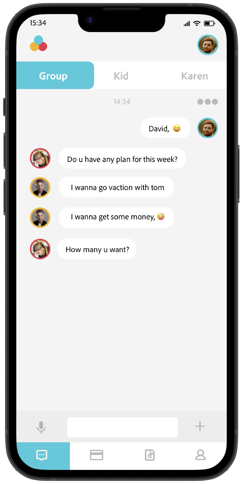
Interview
The lack of care for children in single-parent families leads to a series of problems
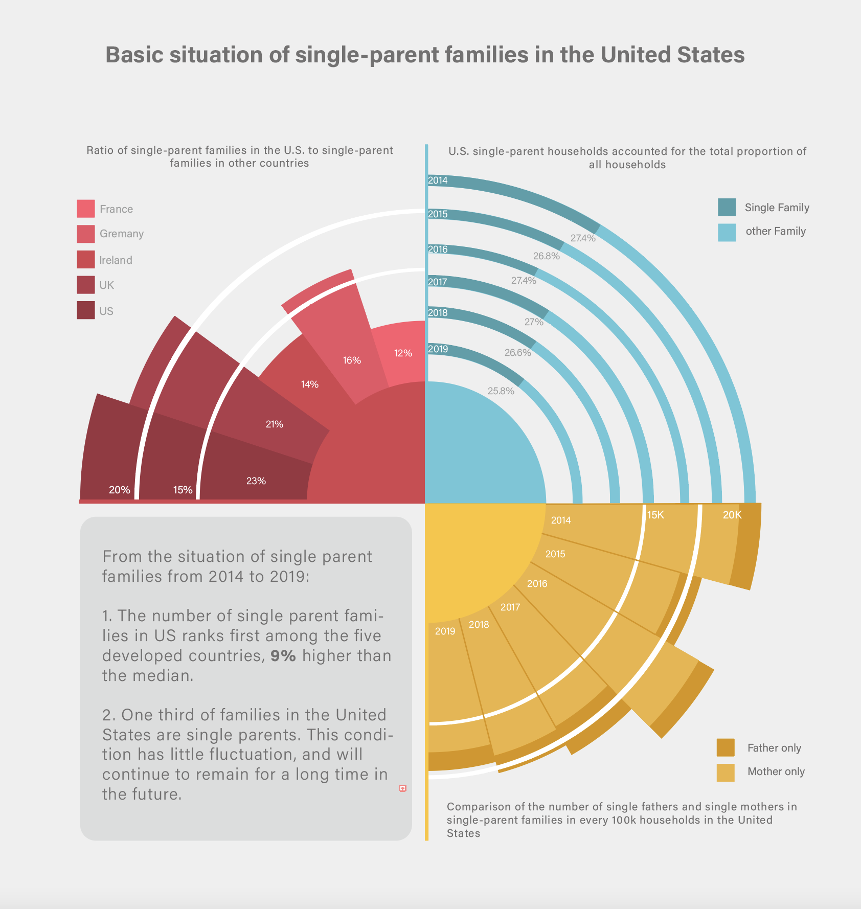
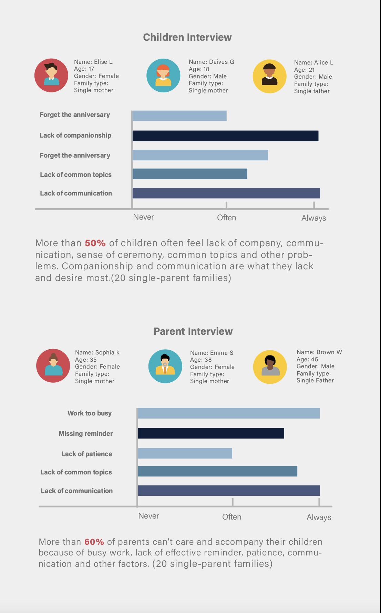
To examine the circumstances of single-parent families in the United States, I conducted a survey on 20 pairs of such families and combined the collected data with some from the U.S. Census Bureau to create the above chart. Based on this chart, I've summarized the basic situations of American single-parent families into four key points.
- Persistent: About one fifth of US families are single-parent households, a figure that is stable and expected to persist.
- Child Needs: Over 50% of children in single-parent families report feeling a lack of companionship, communication, and shared experiences.
- Work-Life Balance: Over 60% of single parents struggle to care for and spend time with their children due to work, lack of reminders, and communication difficulties.
- Communication Desire: Both children and parents in single-parent families desire more effective and frequent communication.
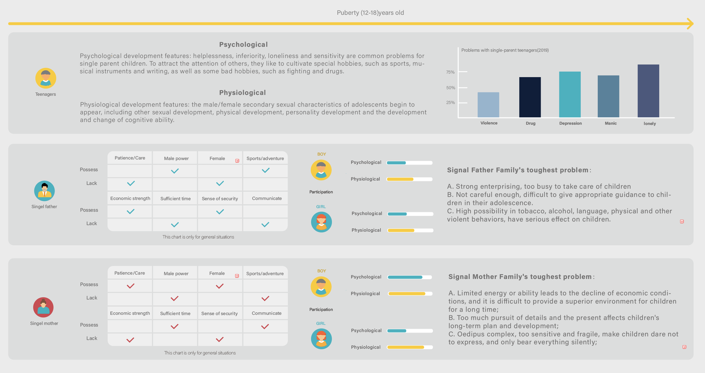
Case study
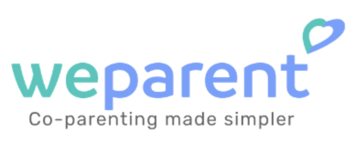
There is no app on the market that provides a comprehensive suite of features including a shared calendar, financial tracking, and flexible chat options, all tailored specifically for the unique needs and challenges of single-parent families. This holistic integration of features may not be found in other similar apps.
Prototyping and improvement
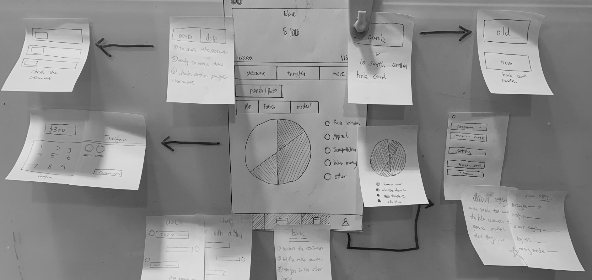
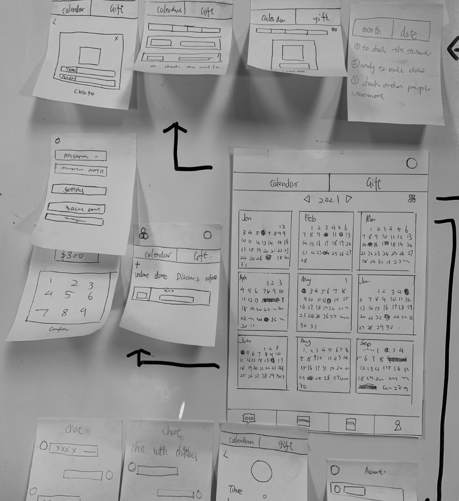
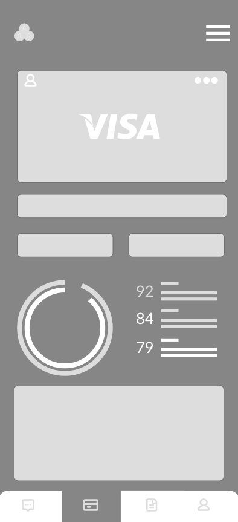
→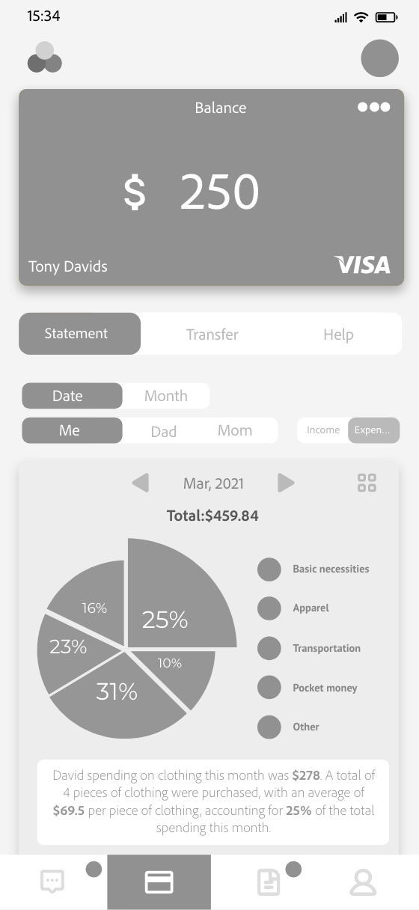
Financial page data information visualization
- Enhanced data visualization on the financial page showcases each parent's contributions, emphasizing their shared financial duties.
- Clear visual representation promotes efficient resource management, underlining the importance of balanced financial responsibility.
- Improved visuals simplify complex financial data, reinforcing shared financial duties in single-parent households.
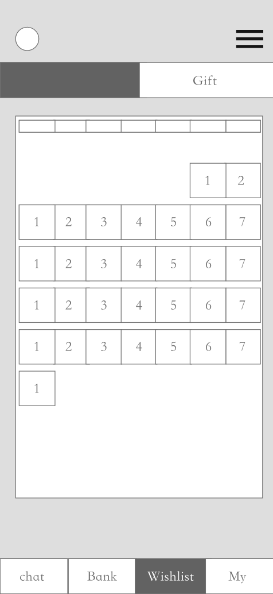
→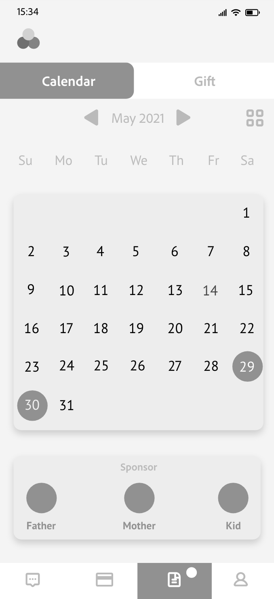
Harmonizing Single-Parent Families events
- The updated calendar promotes effective organization and clear communication within single-parent families.
- Distinct colors for different members enable easy tracking of individual schedules.
- Improved visuals simplify schedule management, emphasizing shared responsibilities.
The Style Guide
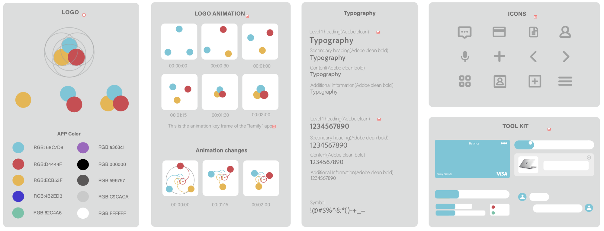
Final Screen
Final project
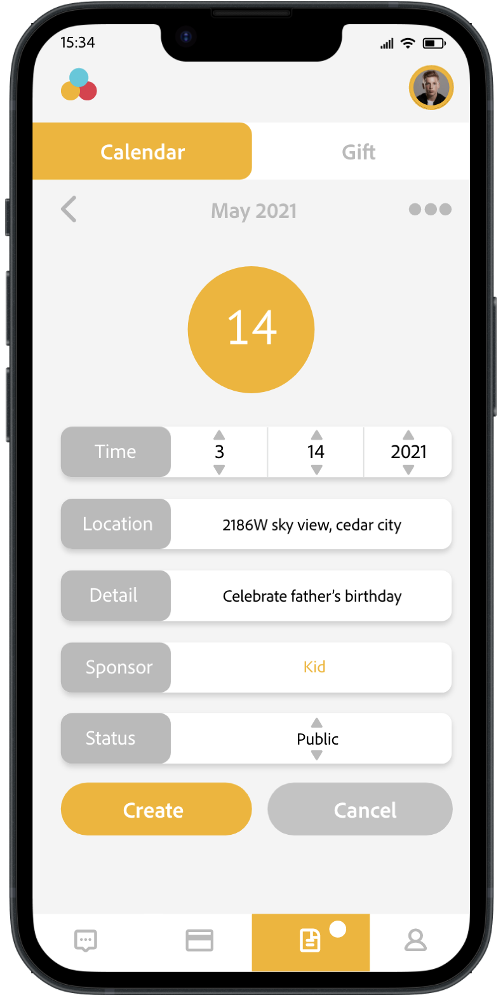
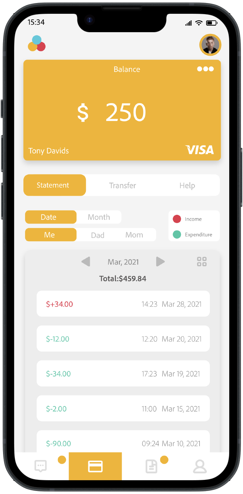
The Key Page
Calendar and Financial System
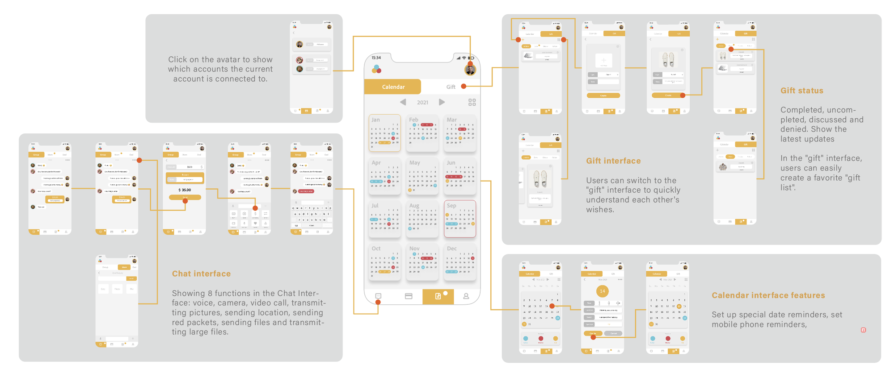
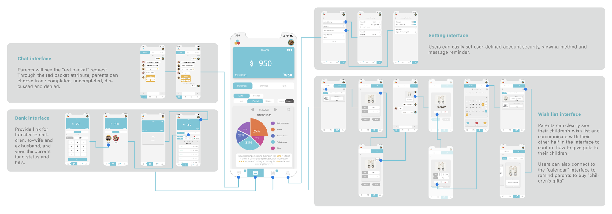
Reflection
- Understanding User Needs: It's vital to understand the target users' needs before and during development. Regular feedback and interaction with users can provide valuable insights.
- Importance of Testing: Rigorous testing before launch can prevent many issues, but some bugs may only become apparent after launch, making ongoing monitoring and debugging crucial.
- Effective Marketing: A good app needs a solid marketing plan to gain visibility in a crowded market.
- User Experience is Key: An intuitive and smooth user experience can greatly contribute to the success of an app.